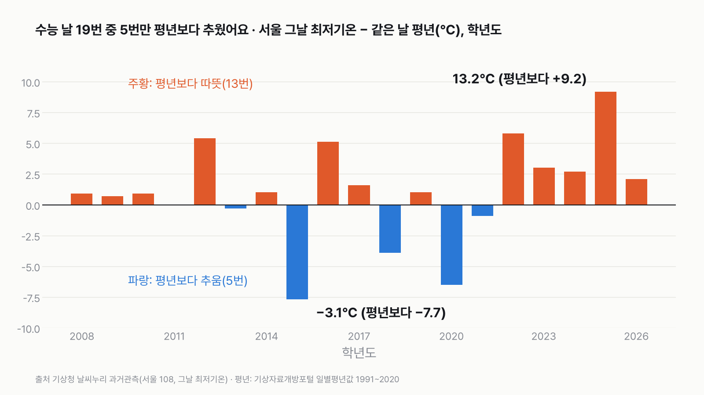
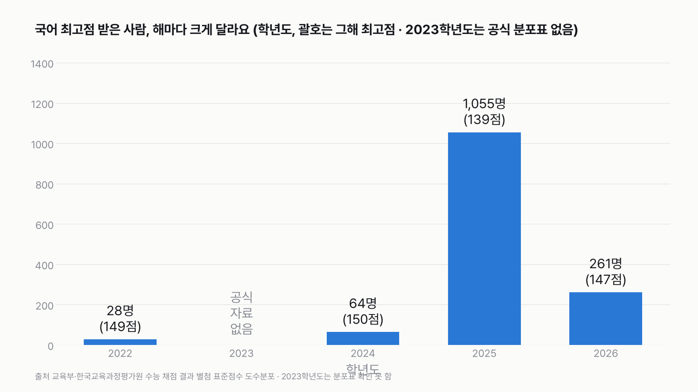
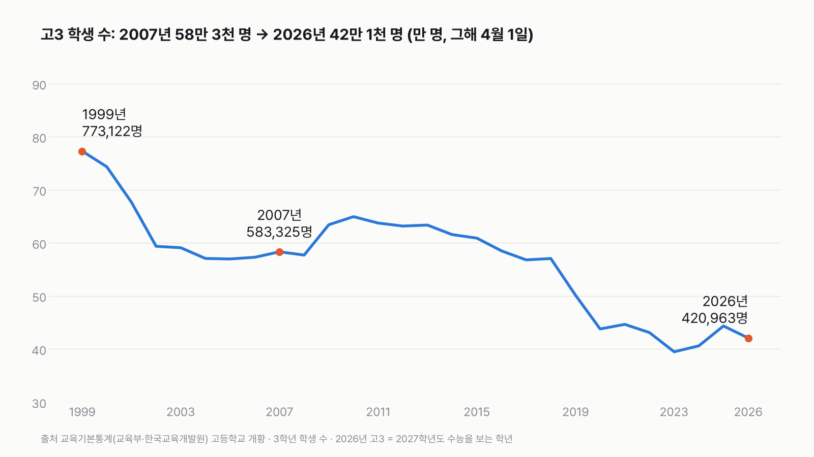

수능 날, 숫자로 보면
수능 날은 '늘 춥다'는 기억과 달리 평년보다 따뜻한 해가 더 많았어요. 그날 하루는 시험장 밖 사람들의 출근과 비행기까지 맞춰 움직여요. 아래 '내 수능 해 찾기' 표에서 내가 시험 본 날을 찾아보세요.

- 2008~2026학년도 19번의 수능 날 가운데 서울 최저기온이 같은 날 평년보다 낮았던 해는 5번이에요. 13번은 평년보다 따뜻했어요. 가장 추웠던 해는 2015학년도(영하 3.1℃)예요.
- 2027학년도 수능은 11월 19일 8시 40분에 시작해 17시 45분에 끝나요. 영어 듣기 25분 동안은 비행기 이착륙 시간을 조정하고 군사훈련을 멈춰요.
- 국어 표준점수 최고점을 받은 사람 수는 해마다 크게 달랐어요(28명~1,055명). 왜 그런지는 이 자료로 알 수 없어요.
1. 수능 날은 정말 추울까요?
19번 중 5번만 평년보다 추웠어요. 2008~2026학년도 수능 날 서울의 그날 최저기온을 같은 날의 평년 최저기온과 견줬어요. 평년보다 낮았던 해는 2013·2015·2018·2020·2021학년도, 5번이에요. 2011학년도는 평년과 같았고(1.9℃), 나머지 13번은 평년보다 따뜻했어요.
크게 추웠던 해는 세 번이에요. 2015학년도(2014년 11월 13일)는 영하 3.1℃로 평년(4.6℃)보다 7.7℃ 낮았어요. 2020학년도는 영하 2.5℃(평년보다 6.5℃ 낮음), 포항 지진으로 한 주 미뤄 치른 2018학년도는 영하 2.5℃(3.9℃ 낮음)였어요. 2013학년도(0.3℃ 낮음)와 2021학년도(0.9℃ 낮음)는 거의 평년이었어요.
가장 따뜻했던 해는 2025학년도예요. 2024년 11월 14일 서울 최저기온은 13.2℃로 평년(4.0℃)보다 9.2℃ 높았어요. '수능 한파'라는 말은 추웠던 해가 기억에 남은 결과일 수 있어요. 어느 쪽이든 그날 아침 따뜻하게 입는 건 맞아요. 올해 11월 19일의 평년 최저기온은 1.7℃예요. 수험생은 11월 13일(금)부터 기상청 누리집에서 시험장 날씨를 확인할 수 있어요.
2. 그날 하루는 어떻게 흘러가나요?
8시 10분까지 입실, 8시 40분 시작, 17시 45분 끝이에요. 2027학년도 수능은 11월 19일(목)에 치러요. 1교시 국어(8:40~10:00), 2교시 수학(10:30~12:10), 점심, 3교시 영어(13:10~14:20), 4교시 한국사·탐구(14:50~16:37), 5교시 제2외국어/한문(17:05~17:45) 순서예요. 1교시는 8시 10분까지, 2교시부터는 매 교시 시작 10분 전까지 시험실에 들어가야 해요. 중증 시각장애로 시험 시간을 늘려 받는 수험생까지 넣으면 마지막 시험은 21시 48분에 끝나요.
시험장 밖도 시간표에 맞춰 움직여요. 정부는 관공서와 기업체에 출근 시간을 오전 10시 이후로 늦춰 달라고 협조를 요청해요. 수험생이 등교하는 오전 6시~8시 10분에는 수도권 지하철을 더 자주 다니게 해요. 시험장 200m 앞부터는 차가 들어갈 수 없어요. 시험장은 전국 1,312곳이에요.
영어 듣기 25분은 하늘도 조용해져요. 3교시 영어 듣기평가(13시 10분~13시 35분) 동안 항공기와 헬리콥터 이착륙 시간을 조정하고, 포 사격과 전차 이동 같은 군사훈련을 잠시 멈춰요. 시험장 근처를 지나는 버스와 열차도 천천히 달리고 경적을 자제해요.
3. 지원한 사람은 모두 시험장에 올까요?
지원자와 응시자는 다른 숫자예요. 올해 지원자는 55만 1,864명이에요. 원서를 낸 사람이라, 시험 날 오지 않는 사람이 있으면 실제로 시험을 보는 사람은 그보다 적어요.
공식 발표가 있는 2020학년도엔 1교시 결시율이 11.52%였어요. 지원자 54만 5,966명 중 6만 2,898명이 1교시(국어)에 오지 않았어요. 열 명 중 한 명 남짓이에요. 이 값은 교육부가 2021학년도 1교시 응시 현황을 발표하면서 전년 값으로 함께 낸 거예요. 코로나 속에 12월 3일 치른 2021학년도는 13.17%(지원자 49만 992명 중 6만 4,648명)였어요.
1교시 결시율은 해마다 따로 발표되지 않았어요. 2022학년도 이후 수능 날짜 전후의 정부 보도자료와 정책뉴스를 찾아봤지만 결시율 발표는 없었어요. 결시에는 사람마다 다른 사정이 있어요. 여기서는 숫자만 적어요.
4. 시험지를 받으면 무엇을 고를까요?
탐구는 사회탐구만 고른 사람이 69.6%예요. 2027학년도 사회·과학탐구 지원자 52만 7,255명 가운데 사회탐구만 고른 사람이 36만 7,073명(69.6%), 과학탐구만 고른 사람이 7만 5,036명(14.2%), 한 과목씩 고른 사람이 8만 5,146명(16.1%)이에요.
수학은 확률과 통계가 64.9%예요. 수학 영역 지원자 51만 8,939명 중 확률과 통계 33만 6,539명(64.9%), 미적분 16만 8,199명(32.4%), 기하 1만 4,201명(2.7%)이에요. 국어는 화법과 작문 74.7%, 언어와 매체 25.3%예요. 왜 이렇게 고르는지는 이 자료로 알 수 없어요.
지원자 셋 중 한 명은 졸업생이에요. 재학생 35만 5,391명(64.4%), 졸업생 17만 3,706명(31.5%), 검정고시 등 2만 2,767명(4.1%)이에요. 지난해(2026학년도)엔 재학생 67.1%, 졸업생 28.9%였어요.
5. 최고점은 몇 명이 받을까요?
국어 최고점을 받은 사람 수는 해마다 크게 달랐어요(28명~1,055명). 채점 결과의 표준점수 분포 맨 윗줄을 보면, 국어 표준점수 최고점과 그 점수를 받은 사람은 2022학년도 149점(28명), 2024학년도 150점(64명), 2025학년도 139점(1,055명), 2026학년도 147점(261명)이에요. 2023학년도는 채점 결과에 분포표가 붙어 있지 않아 공식 값이 없어요. 왜 해마다 이렇게 다른지는 이 자료로 알 수 없어요.
다 맞혀도 받는 점수는 해마다 달라요. 표준점수는 그해 시험을 본 사람들 안에서 매겨져요. 수학 최고점은 2022학년도 147점(2,702명), 2024학년도 148점(612명), 2025학년도 140점(1,522명), 2026학년도 139점(780명)이에요. 2022학년도부터 국어·수학에 선택과목이 생겨서, 그 전 해와는 바로 견주지 않았어요.
전 영역 만점자 수는 공식 문서에서 찾지 못했어요. 2020~2026학년도 채점 결과 보도자료와 첨부에는 전 영역 만점자 수가 없었어요. 그래서 이 글은 최고점과 그 점수를 받은 사람 수만 써요.

6. 내 수능 해와 올해
고3 학생은 16만 명 넘게 줄었어요. 2007년 고3(2008학년도 수능)은 58만 3,325명, 2026년 고3(2027학년도 수능)은 42만 963명이에요. 0.72배예요. 가장 적었던 해는 2023년(39만 4,940명)이에요. 초중고 학생 1명당 한 달 사교육비는 2007년 22.2만 원에서 2025년 45.8만 원이 됐고, 물가를 빼도 1.38배예요.

내 수능 해 찾기
내가 수능 본 해를 찾아보세요. 첫 칸은 수능 학년도이고, 옆 칸이 실제로 시험 본 날이에요. 고3 학생 수와 사교육비는 시험 본 해의 값(그해 고3)이에요. 사교육비는 초중고 학생 전체 평균을 2025년 돈으로 바꾼 값이에요. '—'은 공식 자료가 없거나 아직 오지 않은 칸이에요.
내 해를 고르면 그해 숫자가 여기 떠요.
| 수능 학년도 | 시험 본 날 | 그날 서울 최저기온 | 그해 고3 학생 수 | 사교육비(2025년 돈, 월) | 국어 최고점 받은 사람 |
|---|---|---|---|---|---|
| 2008 | 2007-11-15 | 4.6℃ (평년보다 +0.9) | 583,325명 | 33.2만 원 | — |
| 2009 | 2008-11-13 | 5.3℃ (평년보다 +0.7) | 577,167명 | 33.3만 원 | — |
| 2010 | 2009-11-12 | 6.0℃ (평년보다 +0.9) | 634,336명 | 33.6만 원 | — |
| 2011 | 2010-11-18 | 1.9℃ (평년과 같음) | 649,515명 | 32.4만 원 | — |
| 2012 | 2011-11-10 | 10.9℃ (평년보다 +5.4) | 637,536명 | 31.1만 원 | — |
| 2013 | 2012-11-08 | 6.0℃ (평년보다 -0.3) | 631,835명 | 30.0만 원 | — |
| 2014 | 2013-11-07 | 7.5℃ (평년보다 +1.0) | 633,676명 | 30.0만 원 | — |
| 2015 | 2014-11-13 | -3.1℃ (평년보다 -7.7) | 615,715명 | 29.9만 원 | — |
| 2016 | 2015-11-12 | 10.2℃ (평년보다 +5.1) | 609,144명 | 30.0만 원 | — |
| 2017 | 2016-11-17 | 4.0℃ (평년보다 +1.6) | 585,083명 | 31.1만 원 | — |
| 2018 | 2017-11-23 | -2.5℃ (평년보다 -3.9) | 568,075명 | 32.5만 원 | — |
| 2019 | 2018-11-15 | 4.7℃ (평년보다 +1.0) | 570,661명 | 34.2만 원 | — |
| 2020 | 2019-11-14 | -2.5℃ (평년보다 -6.5) | 501,616명 | 37.6만 원 | — |
| 2021 | 2020-12-03 | -2.3℃ (평년보다 -0.9) | 437,950명 | 35.2만 원 | — |
| 2022 | 2021-11-18 | 7.7℃ (평년보다 +5.8) | 446,573명 | 41.7만 원 | 28명 (149점) |
| 2023 | 2022-11-17 | 5.4℃ (평년보다 +3.0) | 431,118명 | 44.4만 원 | — |
| 2024 | 2023-11-16 | 5.7℃ (평년보다 +2.7) | 394,940명 | 45.3만 원 | 64명 (150점) |
| 2025 | 2024-11-14 | 13.2℃ (평년보다 +9.2) | 406,079명 | 48.4만 원 | 1,055명 (139점) |
| 2026 | 2025-11-13 | 6.7℃ (평년보다 +2.1) | 443,546명 | 45.8만 원 | 261명 (147점) |
| 2027 | 2026-11-19 | 아직 전 (평년 1.7℃) | 420,963명 | — | — |
전체 표 보기
1교시 결시율, 지원자, 졸업생 비율, 그해 금액 사교육비와 참여율까지 담은 표예요. 공식 자료로 확인한 칸만 채웠어요.
| 수능 학년도 | 시험 본 날 | 그날 서울 최저기온 | 1교시 결시율 | 국어 최고점 받은 사람 | 그해 고3 학생 수 | 사교육비(그해 금액, 월) | 사교육비(2025년 돈, 월) | 사교육 참여율 | 지원자 | 졸업생 비율 |
|---|---|---|---|---|---|---|---|---|---|---|
| 2008 | 2007-11-15 | 4.6℃ (평년보다 +0.9) | 공식 발표 없음 | 확인 못 함 | 583,325명 | 22.2만 원 | 33.2만 원 | 77.0% | 공식 자료 없음 | 공식 자료 없음 |
| 2009 | 2008-11-13 | 5.3℃ (평년보다 +0.7) | 공식 발표 없음 | 확인 못 함 | 577,167명 | 23.3만 원 | 33.3만 원 | 75.1% | 공식 자료 없음 | 공식 자료 없음 |
| 2010 | 2009-11-12 | 6.0℃ (평년보다 +0.9) | 공식 발표 없음 | 확인 못 함 | 634,336명 | 24.2만 원 | 33.6만 원 | 75.0% | 공식 자료 없음 | 공식 자료 없음 |
| 2011 | 2010-11-18 | 1.9℃ (평년과 같음) | 공식 발표 없음 | 확인 못 함 | 649,515명 | 24.0만 원 | 32.4만 원 | 73.6% | 공식 자료 없음 | 공식 자료 없음 |
| 2012 | 2011-11-10 | 10.9℃ (평년보다 +5.4) | 공식 발표 없음 | 확인 못 함 | 637,536명 | 24.0만 원 | 31.1만 원 | 71.7% | 공식 자료 없음 | 공식 자료 없음 |
| 2013 | 2012-11-08 | 6.0℃ (평년보다 -0.3) | 공식 발표 없음 | 확인 못 함 | 631,835명 | 23.6만 원 | 30.0만 원 | 69.4% | 공식 자료 없음 | 공식 자료 없음 |
| 2014 | 2013-11-07 | 7.5℃ (평년보다 +1.0) | 공식 발표 없음 | 확인 못 함 | 633,676명 | 23.9만 원 | 30.0만 원 | 68.8% | 공식 자료 없음 | 공식 자료 없음 |
| 2015 | 2014-11-13 | -3.1℃ (평년보다 -7.7) | 공식 발표 없음 | 확인 못 함 | 615,715명 | 24.2만 원 | 29.9만 원 | 68.6% | 공식 자료 없음 | 공식 자료 없음 |
| 2016 | 2015-11-12 | 10.2℃ (평년보다 +5.1) | 공식 발표 없음 | 확인 못 함 | 609,144명 | 24.4만 원 | 30.0만 원 | 68.8% | 공식 자료 없음 | 공식 자료 없음 |
| 2017 | 2016-11-17 | 4.0℃ (평년보다 +1.6) | 공식 발표 없음 | 확인 못 함 | 585,083명 | 25.6만 원 | 31.1만 원 | 67.8% | 공식 자료 없음 | 공식 자료 없음 |
| 2018 | 2017-11-23 | -2.5℃ (평년보다 -3.9) | 공식 발표 없음 | 확인 못 함 | 568,075명 | 27.2만 원 | 32.5만 원 | 71.2% | 공식 자료 없음 | 공식 자료 없음 |
| 2019 | 2018-11-15 | 4.7℃ (평년보다 +1.0) | 공식 발표 없음 | 확인 못 함 | 570,661명 | 29.1만 원 | 34.2만 원 | 72.8% | 공식 자료 없음 | 공식 자료 없음 |
| 2020 | 2019-11-14 | -2.5℃ (평년보다 -6.5) | 11.52% | 확인 못 함 | 501,616명 | 32.1만 원 | 37.6만 원 | 74.8% | 공식 자료 없음 | 공식 자료 없음 |
| 2021 | 2020-12-03 | -2.3℃ (평년보다 -0.9) | 13.17% | 확인 못 함 | 437,950명 | 30.2만 원 | 35.2만 원 | 67.1% | 공식 자료 없음 | 공식 자료 없음 |
| 2022 | 2021-11-18 | 7.7℃ (평년보다 +5.8) | 공식 발표 없음 | 28명 (149점) | 446,573명 | 36.7만 원 | 41.7만 원 | 75.5% | 공식 자료 없음 | 공식 자료 없음 |
| 2023 | 2022-11-17 | 5.4℃ (평년보다 +3.0) | 공식 발표 없음 | 공식 자료 없음(분포표 없음) | 431,118명 | 41.0만 원 | 44.4만 원 | 78.3% | 공식 자료 없음 | 공식 자료 없음 |
| 2024 | 2023-11-16 | 5.7℃ (평년보다 +2.7) | 공식 발표 없음 | 64명 (150점) | 394,940명 | 43.4만 원 | 45.3만 원 | 78.5% | 공식 자료 없음 | 공식 자료 없음 |
| 2025 | 2024-11-14 | 13.2℃ (평년보다 +9.2) | 공식 발표 없음 | 1,055명 (139점) | 406,079명 | 47.4만 원 | 48.4만 원 | 80.0% | 공식 자료 없음 | 공식 자료 없음 |
| 2026 | 2025-11-13 | 6.7℃ (평년보다 +2.1) | 공식 발표 없음 | 261명 (147점) | 443,546명 | 45.8만 원 | 45.8만 원 | 75.7% | 554,174명 | 28.9% |
| 2027 | 2026-11-19 | 아직 전 (평년 1.7℃) | 공식 발표 없음 | 아직 전 | 420,963명 | 아직 조사 전 | 아직 조사 전 | 아직 조사 전 | 551,864명 | 31.5% |
이 숫자는 어디서 왔나요
출처
기준일
- 수능 날 기온 2008~2026학년도, 평년 1991~2020. 2027학년도 시험 시간 2026-07-01 공고, 시행 지원 2026-10-20 발표, 지원자 2026-09-08 발표. 결시율 2020·2021학년도(2020-12-03 발표). 최고점 2022~2026학년도 채점 결과.
- 사교육비 2007~2025년, 고3 학생 수 1999~2026년(4월 1일), 소비자물가지수 2007~2025년, 생활시간조사 1999~2024년.
- 자료 확인한 날: 2026-11-11~12.
기상청 날씨누리
- 과거관측 일별자료(서울, 관측 지점 108)
2008~2026학년도 수능 날 최저기온
기상청 기상자료개방포털
- 우리나라 기후평년값 일별평년값(1991~2020, 서울)
같은 날 평년 최저기온
한국교육과정평가원(정책브리핑 2026-06-30 newsId=156768809, 별첨 공고문)
- 「2027학년도 대학수학능력시험 시행세부계획 공고」(2026-07-01, 공고 제2026-91호)
교시별 시험 시간, 입실 완료 시각
교육부 보도자료(정책브리핑 newsId=156785812)
- 「안정적인 2027학년도 수능 시행을 위해 모든 부처가 힘을 모아 지원합니다」(2026-10-20)
시험일·시간·시험장 수·지원자·출근 시간·지하철·차량 통제·영어 듣기 시간 조치
한국교육과정평가원·교육부 보도자료(정책브리핑 newsId=156780646, 별첨1 지원자 현황)
- 「2027학년도 대학수학능력시험 응시원서 접수 결과」(2026-09-08)
2026·2027학년도 지원자·자격별 수, 과목 선택 인원
교육부 보도자료(정책브리핑 newsId=156424924)
- 「2021학년도 수능 1교시 응시자 현황」(2020-12-03)
2020·2021학년도 1교시 결시율
교육부·한국교육과정평가원 보도자료와 별첨 표준점수 도수분포(정책브리핑 newsId=156485440, 156603901, 156664225, 156733221)
- 2022·2024·2025·2026학년도 수능 채점 결과(2021-12-09, 2023-12-07, 2024-12-05, 2025-12-04)
국어·수학 표준점수 최고점과 받은 사람 수, 응시자 수
교육부·국가데이터처초중고사교육비조사
- 학교급·학년별 사교육비, 참여율KOSIS DT_1PE101원본 보기
2007~2025년
교육부·한국교육개발원교육기본통계
- 고등학교 개황KOSIS DT_1963003_004원본 보기
1999~2026년 고3 학생 수
국가데이터처소비자물가조사
- 지출목적별 소비자물가지수KOSIS DT_1J22001원본 보기
2007~2025년
국가데이터처생활시간조사
- 학생의 학교급별 평균시간KOSIS DT_1TS202010
1999~2024년 고등학생 학습·수면(근거)
어떻게 셌나요
- 수능 날 최저기온은 서울 관측소(지점 번호 108)의 그날 하루 가장 낮은 기온이에요.
- 평년은 1991~2020년 30년 같은 날짜의 평균이에요.
- 1교시 결시율은 1교시(국어)에 오지 않은 지원자 ÷ 지원자예요.
- 표준점수 최고점은 그해 영역별 표준점수 분포표의 가장 높은 점수이고, 괄호는 그 점수를 받은 사람 수예요.
- 지원자는 수능 원서를 낸 사람, 응시자는 실제로 시험을 본 사람이에요.
- 학생 1인당 사교육비는 그해 조사에 잡힌 초중고 학생 전체의 한 달 평균이에요. 2025년 돈으로는 소비자물가지수로 바꾼 값이에요. 2007년 학교급별로는 고등학교가 가장 적었고(19.7만 원), 2025년엔 가장 많아요(49.9만 원). 2025년 학년별로는 고3(45.2만 원)이 고1(53.4만 원)보다 적어요.
- 고등학생 하루(생활시간조사, 요일평균): 하루 학습 시간은 1999년 8시간 50분에서 2024년 6시간 37분, 잠은 7시간 07분에서 8시간이 됐어요. 고3만 따로 나눈 값은 없고, 2014년에 학습 안의 작은 분류가 바뀌었어요.
한계 10가지
이 데이터로 말할 수 없는 것
- 수능 날 기온은 서울 한 지점의 '그날 최저기온'이에요. 아침 특정 시각의 기온도, 전국 시험장의 기온도 아니에요.
- 평년값은 모든 해를 같은 잣대로 보려고 1991~2020 평년으로 통일했어요. 2008~2020학년도 당시 기상청 공식 평년은 1981~2010이었어요. 평년보다 0.3℃, 0.9℃ 낮은 해도 '추웠던 해'로 셌어요.
- 수능 시험일은 2027학년도만 공식 원문으로 확인했어요. 지난 해는 알려진 시험일(2018학년도 11월 23일 연기, 2021학년도 12월 3일 포함)이에요.
- 1교시 결시율은 2020·2021학년도만 정부 공식 발표가 있어요. 다른 해 값은 기사에만 있어서 쓰지 않았어요.
- 국어·수학 최고점은 채점 결과의 표준점수 분포표에서 확인한 해(2022·2024·2025·2026학년도)만 적었어요. 2023학년도는 분포표가 붙어 있지 않아 '공식 자료 없음', 2008~2021학년도는 '확인 못 함'이에요. 전 영역 만점자 수는 공식 문서에서 찾지 못해 쓰지 않았어요.
- 과목 선택 비율과 졸업생 비율은 지원자 기준이에요. 실제로 시험을 본 사람 기준과 다를 수 있어요.
- 지원자는 원서를 낸 사람이고, 응시자는 그날 시험을 본 사람이에요. 채점 결과의 응시자 수(예: 2026학년도 49만 3,896명)는 지원자와 다른 숫자예요.
- '여섯 장'의 숫자는 서로 다른 조사와 발표에서 왔어요. 한 학생을 따라간 숫자가 아니에요.
- 사교육비 '학생 1인당'에는 사교육을 받지 않는 학생도 0원으로 들어가요. 2025년 돈으로 바꾼 값은 소비자물가지수 전체로 바꾼 거예요.
- 숫자는 무엇이 달라졌는지만 보여 줘요. 왜 달라졌는지는 이 자료로 알 수 없어요.
새 글 나오면 받아 보기
피드 리더 앱에 이 사이트 주소를 한 번 넣어 두면, 새 글이 올라올 때 앱에 떠요. 가입이나 메일 주소는 필요 없어요.
받는 법 보기
- 피드 리더 앱을 하나 골라요. 새 글을 모아 보여 주는 앱이에요. 예를 들면 Feedly나 Inoreader가 있어요. 둘 다 무료고 웹·휴대폰에서 써요.
- 앱에서 '구독 추가'(+)를 누르고 아래 주소를 붙여 넣어요.
- 끝이에요. 새 글이 올라오면 앱 목록에 떠요.
https://protofu.github.io/opendata-insight/feed.xmlFeedly를 쓴다면 여기를 눌러 바로 추가할 수도 있어요.